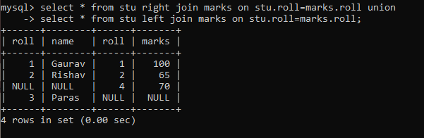

Joins in MySQL
Joins are used in MySQL to combine rows from two or more tables based on a related column between them. The
different types of joins in MySQL are:
- INNER JOIN : Returns all matching rows from both tables.
- LEFT JOIN : Returns all rows from the left table and matching rows from the right table.
- RIGHT JOIN : Returns all rows from the right table and matching rows from the left table.
- FULL OUTER JOpan> Returns all rows from both tables.
- CROSS JOIN : Returns the Cartesian product of the two tables.
- SELF JOIN : Joins a table to itself.
Syntax and Examples :
- INNER JOIN : SELECT column_name(s) FROM table1 INNER JOIN table2 ON table1.column_name = table2.column_name;
- LEFT JOIN : SELECT column_name(s) FROM table1 LEFT JOIN table2 ON table1.column_name = table2.column_name;
- RIGHT JOIN : SELECT column_name(s) FROM table1 RIGHT JOIN table2 ON table1.column_name = table2.column_name;
- FULL OUTER JOIN : SELECT column_name(s) FROM table1 FULL OUTER JOIN table2 ON table1.column_name = table2.column_name;
- CROSS JOIN : SELECT column_name(s) FROM table1 CROSS JOIN table2;
- SELF JOIN : SELECT column_name(s) FROM table1 T1, table1 T2 WHERE condition;
